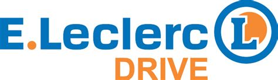
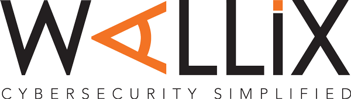

"Dynamique, Responsable, Investi"
Âgé de 20 ans et étudiant en deuxième année de classe préparatoire intégrée, je recherche un CDD pour le mois de juin 2022. Dynamique et rapide dans l'apprentissage, je saurais m'adapter et être rapidement éfficace dans la mission qu'on me donnera.
Formation
- ESIR : cycle universitaire préparatoire aux grandes écoles.
- Assomption : baccalauréat général mention très bien.
Expériences
-
Été 2022
- CDD Leclerc Drive ;  Juin 2022
- Stage en Entreprise, WALLIX : dévellopement d'un API fuzzer en python ;  Octobre 2019
- Scyfco : logistique ; Avril 2018
- Stage d'observation : École des transmissions de l'armée de Terre.

Développement, projets personnels
- Shooter dans le style de DOOM, moteur de raycasting
- Bots discord, aide à la modération, musique dans les salons vocaux...
- Entrainement pour le SWERC (SouthWestern Europe Regional Contest), résolution de problèmes par la programmation
- Home server Minecraft, Plex server, NAS, hébergement du bot discord
- Petits sites web (cv, site sur le Rubik's Cube...)
- En apprentissage: framework Django, language Rust
Vie Associative - Loisirs
- Chef Scout
- Modérateur Discord
- Musculation et Tennis